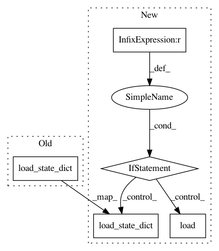

e2b72f5da0a45f9bc81fd7f926a1a6205bb3b182,models/base_model.py,BaseModel,load_networks,#BaseModel#Any#,75
Before Change
save_filename = "%s_net_%s.pth" % (which_epoch, name)
save_path = os.path.join(self.save_dir, save_filename)
net = getattr(self, "net" + name)
net.module.load_state_dict(torch.load(save_path))
// print network information
def print_networks(self, verbose):
print("---------- Networks initialized -------------")
After Change
save_filename = "%s_net_%s.pth" % (which_epoch, name)
save_path = os.path.join(self.save_dir, save_filename)
net = getattr(self, "net" + name)
if len(self.gpu_ids) > 0 and torch.cuda.is_available():
net.module.load_state_dict(torch.load(save_path))
else:
net.load_state_dict(torch.load(save_path))
// print network information
def print_networks(self, verbose):
print("---------- Networks initialized -------------")
for name in self.model_names:
if isinstance(name, str):
In pattern: SUPERPATTERN
Frequency: 4
Non-data size: 5
Instances
Project Name: richzhang/colorization-pytorch
Commit Name: e2b72f5da0a45f9bc81fd7f926a1a6205bb3b182
Time: 2018-04-24
Author: junyanzhu89@gmail.com
File Name: models/base_model.py
Class Name: BaseModel
Method Name: load_networks
Project Name: GRAAL-Research/pytoune
Commit Name: fa7285ad2b599a6ddb1409958e13bfc6084b7047
Time: 2018-05-31
Author: fredy_14@live.fr
File Name: pytoune/framework/callbacks/lr_scheduler.py
Class Name: PyTorchLRSchedulerWrapper
Method Name: load_state
Project Name: GRAAL-Research/pytoune
Commit Name: fa7285ad2b599a6ddb1409958e13bfc6084b7047
Time: 2018-05-31
Author: fredy_14@live.fr
File Name: pytoune/framework/callbacks/lr_scheduler.py
Class Name: ReduceLROnPlateau
Method Name: load_state